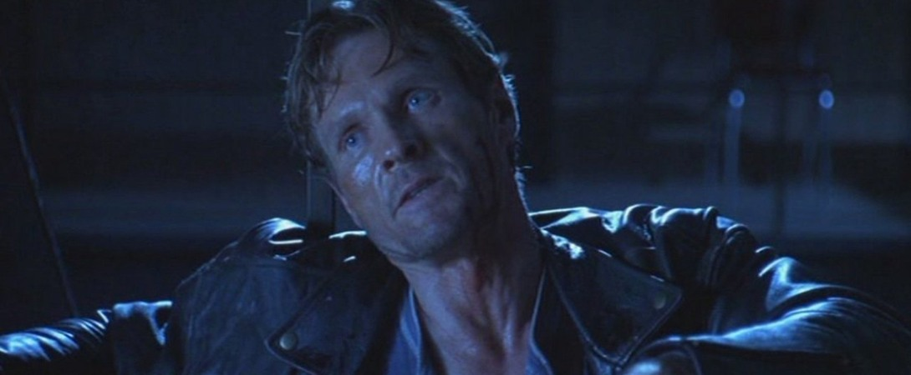
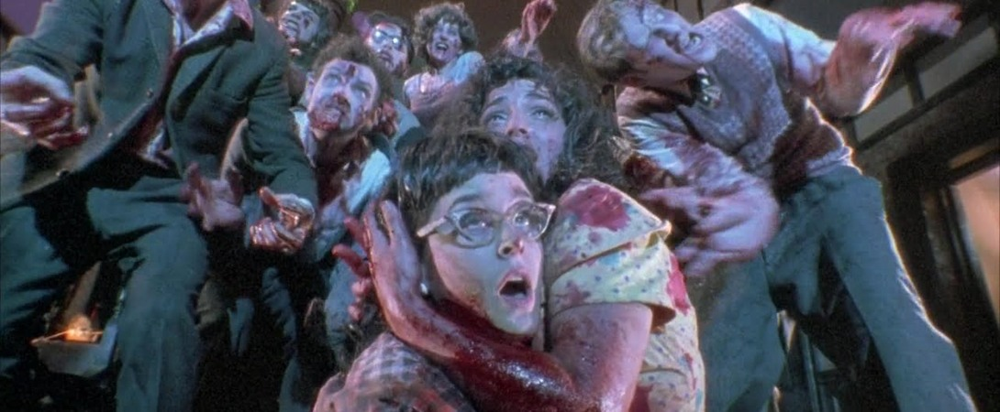
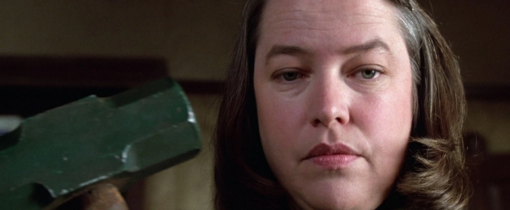
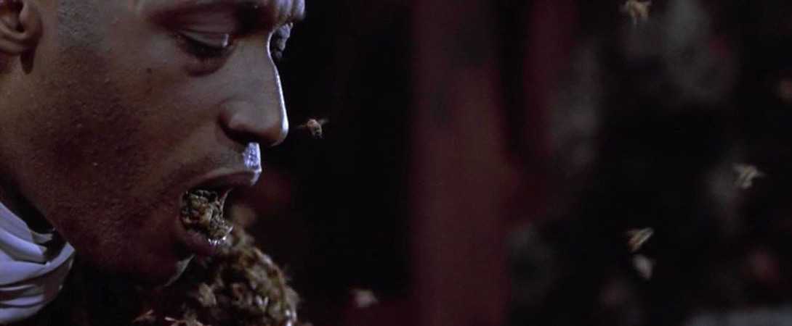
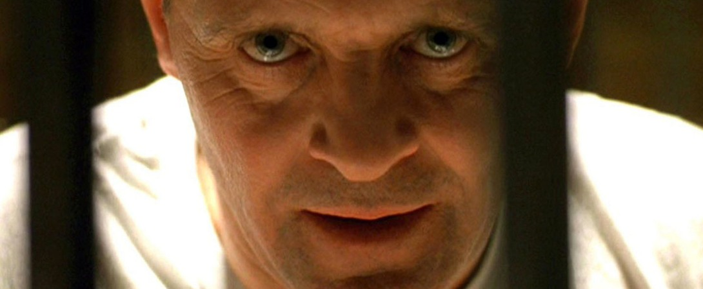
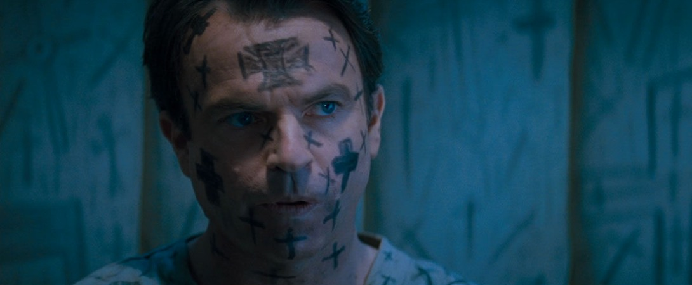
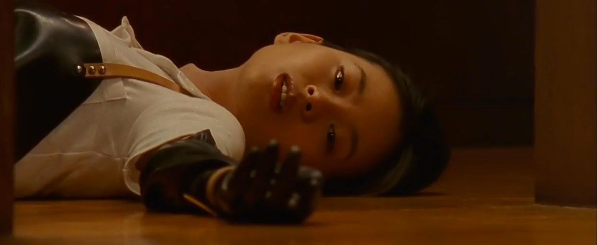
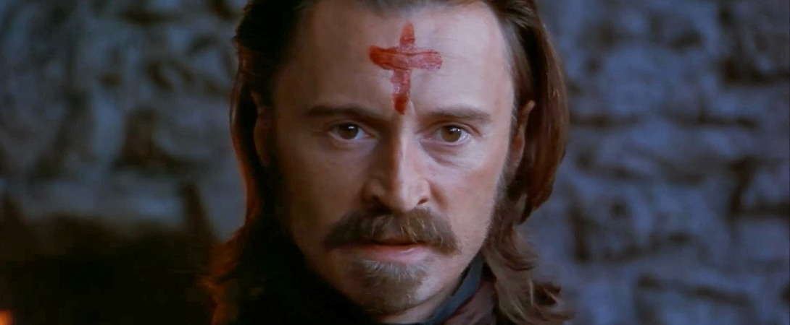

10. Lord of Illusions (1995)

Lord of Illusions is scary mostly in ways in which it lets the creepiness of that murderous allure settle. There are a few BOOs and plenty of grotesque behaviors on display that you would expect from the man who birthed Pinhead into our consciousness. The real scares, however, arrive in the dark well after the movie has climaxed as the smiling, eagerly willing faces of Nix’s flock linger in your imagination.
9. Demon Knight (1995)
In the beginning, the earth was without form and void. Darkness was upon the face of the deep. God said, “Let there be light,” and the beasts were banished to the shadows. Ever since, we’ve been teetering on the precipice, on the verge of falling back into that infinite blackness. Biblical horror is meat and potatoes delicious. Good vs. Evil. The basics and the stuff of a million pop culture entertainments. When HBO’s Tales From the Crypt wanted to break into a theatrical experience, the producers went with a basic, righteous war transforming a hotel (that was once a church) into the final battleground for man’s soul. Ernest Dickerson does The Exorcist by way of Assault on Precinct 13 with an added splash of EC Comics pulp. Populating the violent shenanigans with top-tier character actors like William Sadler, Dick Miller, CCH Pounder, Thomas Haden Church, and Billy Zane at his most diabolically Zaniest. The movie runs at a clip, and it’s silly, and it’s gnarly and gross, and it’s an epic 92 minutes. Everything all us boys and ghouls desire.
8. Dead Alive (1992)
The history of horror cinema is littered with stories about DIY filmmakers making labors of love with their friends. Some of them even make great little features and become famous afterward as well. Dead Alive is one such movie — a low budget gorefest from Peter Jackson that’s balls to the wall mayhem and nothing like those fantasy movies he made about rings and hobbits. The plot is simple: an overprotective mother gets bitten by a rat-monkey and turns the neighbors into hordes of the walking dead, and then they all crash a party together. What ensues is a bloody fun time with a sweet lawnmower massacre thrown in for kicks.
7. Army of Darkness (1992)

Ever since I saw the Frank Frazetta-style one-sheet on the back cover of an early ’90s Marvel comic, Army of Darkness has held a special place in my heart. Not just mine, my whole family’s. Watching the film together is an early VHS memory, my parents fast-forwarding through the more intense bits, allowing Bruce Campbell’s dialogue to become household catchphrases that still stick in my head today. The third film in the Evil Dead series has enough sword and sorcery to be considered a fantasy film while not skimping on the blood and guts you come to expect from a horror franchise. But it was also unlike anything else we would see throughout a decade that skewed away from wacky self-referential horror comedies to the slightly-more-serious minded meta-slashers from 1994 on. But as a film that’s equal parts silly, bloody, and funny — with just enough spooky moments to keep audiences pulse pumping — Army of Darkness is a perfect gateway film for budding young horror fans looking to get into the genre.
6. Misery (1990)
Of the many anxieties that plague writers, the fear of being kidnapped by a maniacal fan deserves to be at least close to the top of the list. In Rob Reiner‘s adaptation of the same-named Stephen King book, James Caan stars as Paul Sheldon, a successful novelist who rose to fame for a series revolving around Victorian romance heroine Misery Chastain. While driving through a blizzard, Paul’s car goes off-road and is rescued by devout fan Annie Wilkes (Kathy Bates). Not at all pleased with the discovery of his latest manuscript, Annie gets her revenge on Paul in the most gleefully unhinged ways possible. Partly thanks to Bates’s god-level performance, Misery is gruesome, at times genuinely frightening, and incredulously funny.
5. Candyman (1992)
America deserves its monsters. We’re a nation built on blood and bones, and those that sit comfortably on top (or even in the middle) should be confronted by that hellish history. Writer/Director Bernard Rose snatched a decent Clive Barker short story involving a nasty urban legend and injected the premise with an extra layer of pain as he transplanted it across the pond and upon colonial shores. Candyman is a grim, vengeance story where everyone is a victim, including the creature that stalks the Cabrini-Green housing projects. Tony Todd cuts a terrifying figure, but the most satisfying moments are those in which the actor aches for the character he is playing. In a land of teenage slashers, Candyman is the killer you can root for and encourage as he stalks his way to the real scum that inherited the earth.
4. The Silence of the Lambs (1991)
Since this movie won several Academy Awards, some people will tell you that it’s not a horror movie. If it came out today, it’d probably be described as “elevated horror” at best just so the naysayers who think horror is a dirty word could enjoy it without feeling guilty about having an appetite for cannibalism and a morbid fascination with serial killers. And who can blame for enjoying psychological horror that’s this compelling? Hannibal Lecter (Anthony Hopkins) is one of the most intriguing movie villains; he’s calculated, unsettling, and manic while being simultaneously charming and intelligent. His ability to probe minds is terrifying, but his attempt at getting under people’s skin makes for some interesting psychological chess. The Silence of the Lambs is pure psychological horror at its finest. Enjoy it with some fava beans and a nice chianti.
3. In the Mouth of Madness (1994)
We all have a “Them.” Those monstrous bastards that cocked it all up and sent us down the dark paths we all currently occupy. What? Not you? You’re good? Next, you’ll tell me you’ve never read Sutter Cane. Foolish. By 1994, John Carpenter had firmly established himself as a master of horror and could have closed up shop and never directed another film again. Then he comes along and delivers what is probably the best cinematic adaptation of H.P. Lovecraft without ever actually tackling a specific short story. Lovecraft knew that true horror, even the slimy-creepy crawlies that rise from the oceans and lurk in your attic walls, are indescribable. You can see a tentacle here, and a rolling eye there, but the printed page and the motion picture image could never do justice to their wretched nature. Carpenter tells a fantastic monster movie by not focusing on the creatures that haunt the shadows, but in the reality that their very existence would disrupt. Confrontation with Them would be awful, but knowledge of Them is just as deadly.
2. Audition (1999)
Takashi Miike has made 88 feature films as of this writing — he’ll probably be at 92 by the time I finish this paragraph — but while his voracious appetite for filmmaking might suggest a quantity over quality situation, the truth is far more nuanced. He makes good movies, bad movies, and great movies. Audition is one of the greatest ones. It’s a slow burn film that moves effortlessly through genres, from drama to comedy to thriller to absolute and exquisite horror. It’s immensely entertaining along the way as we laugh along with it before laughing nervously at our own increasing anxiety. There’s fun here, of the unusual and dark variety, but there’s also a commentary on men’s casual mistreatment of women. It’s no light theme either, and while Miike’s been accused of being a misogynistic filmmaker in the past, Audition makes it clear that’s not the case. He sees all people, men and women, as both monster and victim, and he loves his creations equally. Of course, it’s entirely possible that he might despise them equally, as well. Either way, Audition is a film that creeps up on you before shocking your system with its beautifully orchestrated madness. If you’ve yet to see it, avoid any other writing about the film and simply watch it. It’s not only a great Miike film, it’s one of the best films of the 1990s.
Ravenous (1999)
Antonia Bird’s Ravenous is bloodthirsty, off-beat, and a goddamn miracle: a $12 million survival-horror-comedy-Western that bombed at the box office and is now rightfully recognized as one of the genre’s greatest offerings. Without saying too much, Ravenous follows John Boyd (Guy Pearce), an American soldier banished to an isolated outpost in the Sierra Nevadas after being ousted as a coward. Fort Spencer is populated by a ragtag group of character actors all on the edge of a nervous breakdown. Then, one night, their numbers are rounded out by Colghoun (Robert Carlyle), a stranger who staggers up to their doorstep with frostbite and a hellish tale of a lost wagon party that has descended into cannibalism. I love stories that underline the horror show of history, and I’m a particularly big fan of fancy colonial men losing all of their pomp and civility by being where they shouldn’t be and letting their greed get the best of them.